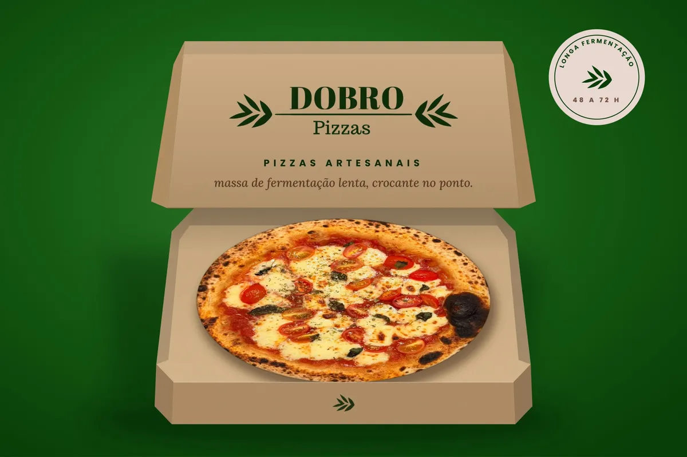
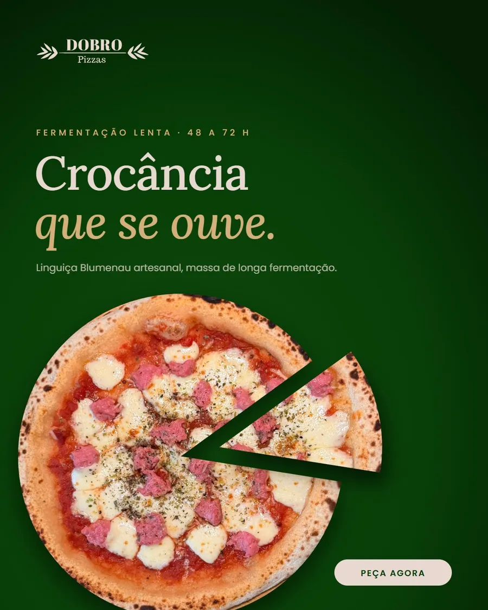
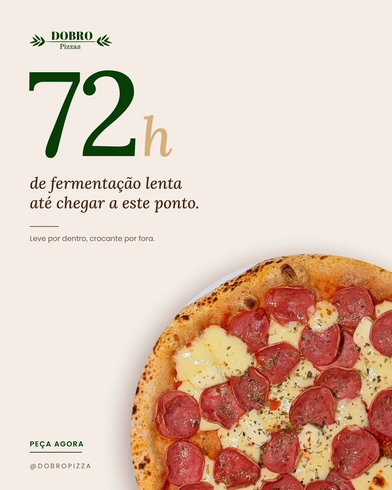
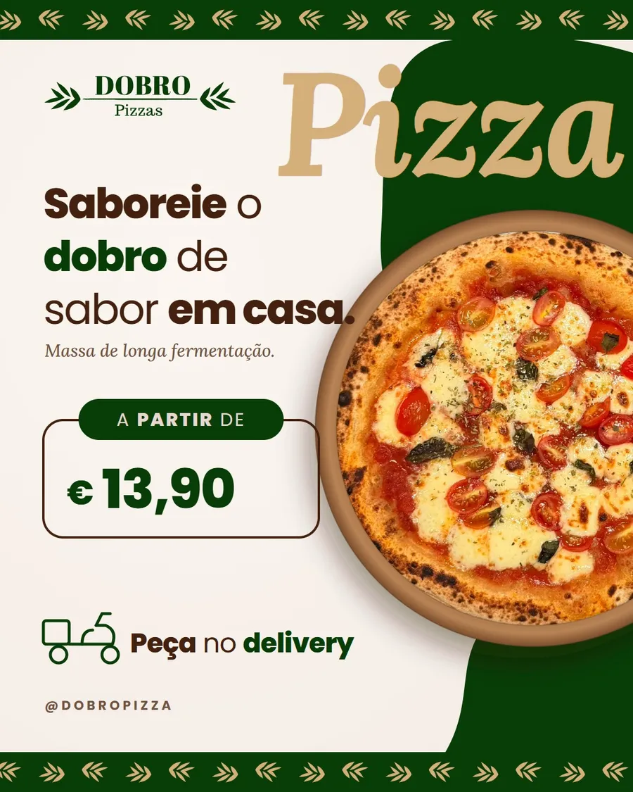
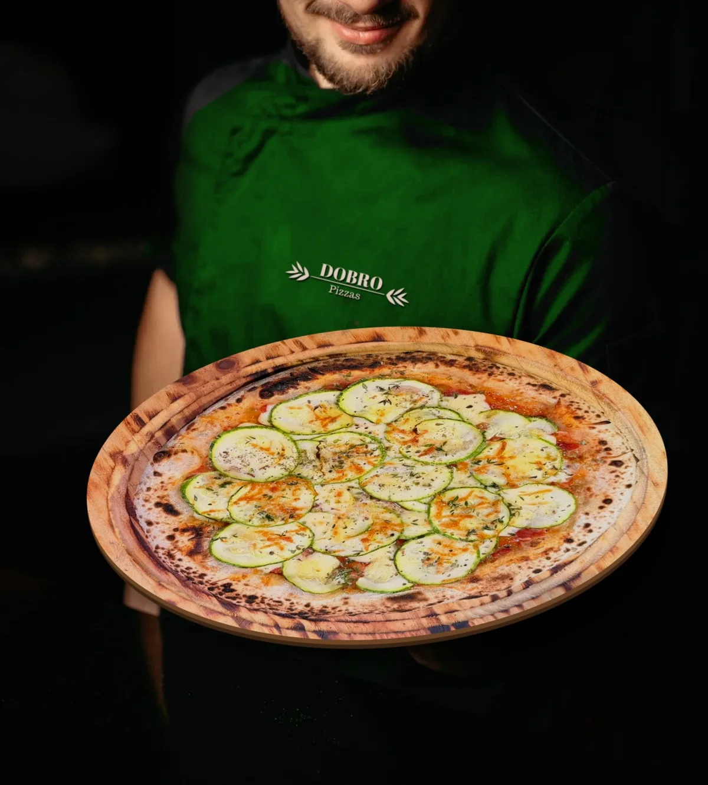

<title>Brandbook DOBRO Pizzas</title>
<link rel="preconnect" href="https://fonts.googleapis.com">
<link rel="preconnect" href="https://fonts.gstatic.com" crossorigin>
<link href="https://fonts.googleapis.com/css2?family=Poppins:wght@300;400;500;600&family=Lora:ital,wght@0,400;0,500;0,600;1,400;1,500&display=swap" rel="stylesheet">
<style>
/* Layout: an A4-portrait brand manual. One idea per page, one left-aligned text column, generous white space.
   On screen pages stack as sheets; in print each .page is one A4 sheet. Single brand world, light only. */
:root {
  --verde: #083D07; --linho: #E8D8D1; --espresso: #44210F; --trigo: #D5AF7A;
  --blush: #F6E3DF; --terra: #745240; --nude: #E4C5B9; --papel: #FBF8F4; --linha: rgba(116,82,64,.18);
  --serif: 'Lora', Georgia, 'Times New Roman', serif;
  --sans: 'Poppins', 'Segoe UI', Arial, sans-serif;
  --pad-x: 64px; --pad-t: 64px; --pad-b: 44px;
  color-scheme: light;
}
* { box-sizing: border-box; }
body { margin: 0; background: #DCD0C7; color: var(--espresso); font-family: var(--sans); font-size: 13.5px; font-weight: 400; line-height: 1.65; -webkit-font-smoothing: antialiased; }
.book { padding-block: 40px 80px; padding-inline: 16px; display: grid; gap: 32px; justify-items: center; }
.page { width: 100%; max-width: 794px; aspect-ratio: 210 / 297; background: var(--papel); position: relative; overflow: hidden;
  box-shadow: 0 1px 2px rgba(68,33,15,.08), 0 24px 48px rgba(68,33,15,.14);
  display: grid; grid-template-rows: auto minmax(0, 1fr); padding: var(--pad-t) var(--pad-x) var(--pad-b); }
.page.dark { background: var(--verde); color: var(--linho); }
.page.linho { background: var(--linho); }

/* running head */
.folio { display: flex; justify-content: space-between; gap: 16px; font-size: 9.5px; letter-spacing: .24em; text-transform: uppercase; font-weight: 500; color: var(--terra); }
.folio .st { letter-spacing: .18em; }
.dark .folio { color: var(--trigo); }
.content { min-height: 0; padding-top: 44px; display: grid; align-content: start; gap: 28px; }
.content.fill { grid-template-rows: auto minmax(0, 1fr); }
.content.end { align-content: end; }

/* type */
h1, h2, h3 { font-family: var(--serif); font-weight: 500; margin: 0; text-wrap: balance; color: inherit; }
h1 { font-size: 54px; line-height: 1.04; letter-spacing: -.01em; }
h2 { font-size: 38px; line-height: 1.1; letter-spacing: -.005em; max-width: 15ch; }
h3 { font-size: 19px; line-height: 1.25; }
p { margin: 0; max-width: 60ch; }
.lede { font-family: var(--serif); font-size: 17px; line-height: 1.6; max-width: 46ch; }
.small { font-size: 11.5px; line-height: 1.6; }
.label { font-size: 9.5px; letter-spacing: .22em; text-transform: uppercase; font-weight: 500; color: var(--terra); }
.dark .label { color: var(--trigo); }
.muted { color: var(--terra); }
.dark .muted { color: var(--nude); }
em.ac { font-style: italic; color: var(--verde); }
.dark em.ac { color: var(--trigo); }
.mark { color: var(--terra); font-size: 10px; vertical-align: super; margin-left: 2px; }
.rule { height: 1px; background: var(--linha); border: 0; margin: 0; }
.dark .rule { background: rgba(232,216,209,.2); }
.stack { display: grid; gap: 12px; align-content: start; }
.two { display: grid; grid-template-columns: 1fr 1fr; gap: 28px 32px; }
.two > *, .stack > * { min-width: 0; }

/* rows: label column + text column, separated by hairlines */
.rows { display: grid; }
.row { display: grid; grid-template-columns: 150px 1fr; gap: 20px; padding: 13px 0; border-top: 1px solid var(--linha); }
.row:last-child { border-bottom: 1px solid var(--linha); }
.row .k { font-family: var(--serif); font-size: 15px; color: var(--verde); line-height: 1.35; }
.dark .row { border-color: rgba(232,216,209,.18); }
.row p { font-size: 12.5px; }

.photo { width: 100%; height: 100%; min-height: 0; object-fit: cover; display: block; }
figure { margin: 0; display: grid; grid-template-rows: minmax(0, 1fr) auto; gap: 10px; min-height: 0; }
figcaption { font-size: 11px; line-height: 1.5; color: var(--terra); }
figcaption b { font-weight: 500; color: var(--espresso); }
.logo { display: block; aspect-ratio: 950.4 / 205; height: auto; fill: var(--verde); }
.ramo { display: block; aspect-ratio: 192 / 152; height: auto; fill: var(--verde); }

/* cover */
.cover { padding: 0; grid-template-rows: 58% 1fr; }
.cover img { width: 100%; height: 100%; object-fit: cover; display: block; }
.cover .base { padding: 48px var(--pad-x) var(--pad-b); display: grid; grid-template-rows: auto 1fr auto; gap: 24px; }
.cover .base .meta { display: flex; justify-content: space-between; font-size: 9.5px; letter-spacing: .24em; text-transform: uppercase; color: var(--terra); font-weight: 500; }

/* contents */
.toc { display: grid; }
.toc a { display: grid; grid-template-columns: 40px 1fr auto; align-items: baseline; gap: 12px; padding: 11px 0; border-top: 1px solid var(--linha); color: inherit; text-decoration: none; }
.toc a:last-child { border-bottom: 1px solid var(--linha); }
.toc .n { font-family: var(--serif); font-style: italic; color: var(--terra); font-size: 15px; }
.toc .t { font-family: var(--serif); font-size: 16px; }
.toc .p { font-size: 11px; color: var(--terra); font-variant-numeric: tabular-nums; }

.pillars { display: grid; }
.pillar { display: grid; grid-template-columns: 150px 1fr; gap: 20px; padding: 16px 0; border-top: 1px solid var(--linha); }
.pillar:last-child { border-bottom: 1px solid var(--linha); }
.pillar .w { font-family: var(--serif); font-size: 22px; color: var(--verde); line-height: 1.2; }

.manifesto { font-family: var(--serif); font-style: italic; font-size: 18px; line-height: 1.55; display: grid; gap: 12px; max-width: 40ch; }
.manifesto .sign { font-style: normal; color: var(--trigo); font-size: 17px; }
.page:not(.dark) .manifesto .sign { color: var(--verde); }

.voice { display: grid; }
.voice div { display: grid; grid-template-columns: 110px 1fr; gap: 20px; padding: 12px 0; border-top: 1px solid var(--linha); }
.voice div:last-child { border-bottom: 1px solid var(--linha); }
.voice .say { font-family: var(--serif); font-style: italic; font-size: 14.5px; color: var(--verde); line-height: 1.45; }
.voice .no { display: block; font-size: 11px; color: var(--terra); margin-top: 4px; }
.lexicon { display: flex; flex-wrap: wrap; gap: 6px 22px; font-family: var(--serif); font-style: italic; font-size: 15px; color: var(--espresso); }

/* logo pages */
.stage { background: var(--linho); display: grid; place-items: center; }
.anat { position: relative; width: 78%; margin: 64px 0; }
.pin { position: absolute; display: grid; justify-items: center; gap: 4px; transform: translateX(-50%); font-size: 9.5px; letter-spacing: .14em; text-transform: uppercase; color: var(--terra); font-weight: 500; white-space: nowrap; }
.pin i { font-style: normal; font-family: var(--serif); font-size: 13px; color: var(--espresso); }
.pin::after { content: ''; width: 1px; height: 22px; background: var(--terra); opacity: .5; }
.pin.up { bottom: 106%; } .pin.down { top: 106%; } .pin.down::after { order: -1; }
.parts { display: grid; grid-template-columns: 1fr 1fr; gap: 22px 32px; }
.parts h3 { font-size: 15px; margin-bottom: 4px; }
.parts h3 span { font-style: italic; color: var(--terra); margin-right: 6px; }

.tiles { display: grid; grid-template-columns: 1fr 1fr; gap: 14px; }
.tile { display: grid; grid-template-rows: auto auto; gap: 8px; }
.tile .stage { aspect-ratio: 16 / 9; }
.tile .stage .logo { width: 62%; }
.tile .stage .ramo { width: 22%; }
.tile p { font-size: 11px; color: var(--terra); }
.tile p b { font-weight: 500; color: var(--espresso); margin-right: 6px; }
.tiles.four { grid-template-columns: repeat(2, 1fr); }
.tiles.four .stage { aspect-ratio: 2 / 1; position: relative; overflow: hidden; }
.x { position: absolute; top: 8px; left: 10px; font-size: 13px; color: #A1301F; font-weight: 600; }
.v { position: absolute; top: 8px; left: 10px; font-size: 13px; color: var(--verde); font-weight: 600; }

.clear { background: var(--linho); display: grid; place-items: center; padding: 56px 0; }
.clear .box { position: relative; padding: 40px; outline: 1px dashed var(--terra); }
.clear .box .logo { width: 330px; }
.clear .q { position: absolute; width: 40px; height: 40px; border: 1px solid var(--terra); display: grid; place-items: center; font-family: var(--serif); font-style: italic; color: var(--terra); font-size: 13px; }

/* palette */
.swatches { display: grid; }
.sw { display: grid; grid-template-columns: 120px 1fr auto; align-items: center; gap: 22px; padding: 10px 0; border-top: 1px solid var(--linha); }
.sw:last-child { border-bottom: 1px solid var(--linha); }
.sw .c { height: 52px; border-radius: 2px; }
.sw .n { font-family: var(--serif); font-size: 15px; line-height: 1.3; }
.sw .n small { display: block; font-family: var(--sans); font-size: 10.5px; color: var(--terra); margin-top: 2px; }
.sw .code { font-size: 10.5px; line-height: 1.55; color: var(--terra); text-align: right; font-variant-numeric: tabular-nums; }
.sw .code b { font-weight: 500; color: var(--espresso); }
.ratio { display: flex; height: 10px; border-radius: 2px; overflow: hidden; }
.pairs { display: grid; grid-template-columns: repeat(3, 1fr); gap: 12px; }
.pair { aspect-ratio: 5 / 4; padding: 16px; display: grid; align-content: space-between; border-radius: 2px; }
.pair .t { font-family: var(--serif); font-size: 18px; line-height: 1.15; }
.pair .m { font-size: 10px; letter-spacing: .06em; font-variant-numeric: tabular-nums; opacity: .85; }

/* type */
.spec-aa { font-size: 96px; line-height: .9; color: var(--verde); }
.scale { display: grid; }
.scale div { display: grid; grid-template-columns: 90px 1fr; gap: 18px; align-items: baseline; padding: 11px 0; border-top: 1px solid var(--linha); }
.scale div:last-child { border-bottom: 1px solid var(--linha); }

.icons { display: grid; grid-template-columns: repeat(6, 1fr); gap: 10px; }
.icon { display: grid; justify-items: center; gap: 8px; text-align: center; }
.icon svg { width: 44px; height: 44px; }
.icon span { font-size: 9.5px; color: var(--nude); line-height: 1.3; }
.pattern { position: relative; overflow: hidden; background: var(--linho); min-height: 0; }

.pgrid { display: grid; grid-template-columns: 1fr 1fr 1fr; grid-template-rows: 1fr 1fr; gap: 8px; min-height: 0; }
.pgrid img { width: 100%; height: 100%; object-fit: cover; display: block; min-height: 0; }
.pgrid .big { grid-column: span 2; grid-row: span 2; }
.list { display: grid; gap: 8px; margin: 0; padding: 0; list-style: none; }
.list li { display: grid; grid-template-columns: 16px 1fr; gap: 6px; font-size: 12.5px; line-height: 1.55; }
.list li::before { content: '—'; color: var(--verde); }
.list.no li::before { content: '×'; color: #A1301F; }

/* mockups built in CSS */
.desk { background: var(--linho); display: grid; place-items: center; gap: 36px; padding: 40px; min-height: 0; }
.sh { box-shadow: 0 2px 4px rgba(43,26,14,.12), 0 14px 28px rgba(43,26,14,.16); }
.seal { width: 150px; aspect-ratio: 1; border-radius: 50%; background: var(--verde); display: grid; place-items: center; align-content: center; gap: 8px; position: relative; box-shadow: inset 0 0 0 6px var(--verde), inset 0 0 0 7px rgba(213,175,122,.6); }
.seal .logo { width: 108px; fill: var(--linho); }
.seal.light { background: var(--linho); box-shadow: inset 0 0 0 6px var(--linho), inset 0 0 0 7px rgba(8,61,7,.4); }
.seal.light .logo { fill: var(--verde); }
.seal.light small { color: var(--terra); }
.seal .ramo { width: 42px; fill: var(--trigo); }
.seal small { font-size: 7px; letter-spacing: .24em; font-weight: 500; color: var(--trigo); text-align: center; }
.ticket { width: 220px; background: #fff; padding: 14px 16px; display: grid; gap: 6px; font-size: 10.5px; }
.ticket .r { display: flex; justify-content: space-between; gap: 10px; border-bottom: 1px dashed rgba(116,82,64,.3); padding-bottom: 5px; }
.ticket .r:last-child { border: 0; }
.card { width: 240px; aspect-ratio: 10 / 7; background: var(--papel); padding: 18px; display: grid; align-content: space-between; }
.card p { font-family: var(--serif); font-style: italic; font-size: 16px; line-height: 1.35; color: var(--verde); }
.paperx { width: 190px; aspect-ratio: 1; background: #F7F1EA; position: relative; overflow: hidden; }
.bc { width: 250px; aspect-ratio: 85 / 55; padding: 18px; display: grid; }
.bc.front { background: var(--verde); place-items: center; }
.bc.front .logo { width: 70%; fill: var(--linho); }
.bc.back { background: var(--papel); align-content: space-between; }
.bc.back .nm { font-family: var(--serif); font-size: 16px; color: var(--verde); line-height: 1.1; }
.bc.back .rl { font-size: 8px; letter-spacing: .22em; text-transform: uppercase; color: var(--terra); }
.bc.back .in { font-size: 9px; line-height: 1.6; }
.loyal { width: 270px; aspect-ratio: 85 / 55; background: var(--terra); color: var(--linho); padding: 16px; display: grid; align-content: space-between; }
.stamps { display: grid; grid-template-columns: repeat(5, 1fr); gap: 6px; }
.stamps span { aspect-ratio: 1; border-radius: 50%; border: 1px dashed rgba(232,216,209,.5); display: grid; place-items: center; }
.stamps span.on { background: var(--linho); border: 0; }
.stamps span.on .logo { width: 80%; }

.menu { width: 300px; aspect-ratio: 210 / 297; background: var(--papel); padding: 26px 24px 18px; display: grid; grid-template-rows: auto auto 1fr auto; gap: 12px; }
.menu .logo { width: 58%; justify-self: center; }
.menu .sec { font-size: 8px; letter-spacing: .28em; text-transform: uppercase; color: var(--terra); text-align: center; padding: 4px 0; border-top: 1px solid var(--linha); border-bottom: 1px solid var(--linha); }
.mi { display: grid; grid-template-columns: 1fr auto; gap: 0 8px; padding: 4px 0; }
.mi b { font-size: 10px; font-weight: 500; }
.mi span { font-size: 9.5px; color: var(--verde); font-variant-numeric: tabular-nums; }
.mi p { grid-column: 1 / -1; font-family: var(--serif); font-style: italic; font-size: 8.6px; line-height: 1.35; color: var(--terra); }

.phone { width: 210px; aspect-ratio: 9 / 19; border-radius: 28px; background: #1B140E; padding: 8px; }
.screen { height: 100%; border-radius: 21px; overflow: hidden; background: #fff; display: grid; grid-template-rows: auto auto 1fr; }
.igt { display: flex; align-items: center; gap: 8px; padding: 12px 10px 6px; font-size: 9.5px; font-weight: 600; color: #222; }
.iga { width: 28px; height: 28px; border-radius: 50%; background: var(--linho); display: grid; place-items: center; border: 1.5px solid var(--verde); }
.iga .logo { width: 84%; }
.igb { padding: 0 10px 8px; font-size: 8px; line-height: 1.4; color: #444; }
.feed { display: grid; grid-template-columns: repeat(3, 1fr); gap: 2px; align-content: start; }
.feed > * { aspect-ratio: 4 / 5; overflow: hidden; }
.feed img { width: 100%; height: 100%; object-fit: cover; display: block; }
.story { width: 150px; aspect-ratio: 9 / 16; position: relative; overflow: hidden; border-radius: 12px; }
.story img { position: absolute; inset: 0; width: 100%; height: 100%; object-fit: cover; }
.posts { display: grid; grid-template-columns: 1fr 1fr; gap: 14px; min-height: 0; }
.posts figure { margin: 0; display: grid; grid-template-rows: auto auto; align-content: start; justify-items: start; gap: 8px; min-height: 0; }
.posts figure img { height: 318px; width: auto; max-width: 100%; aspect-ratio: 4 / 5; object-fit: cover; display: block; }
.posts figure figcaption { font-size: 10px; line-height: 1.5; }

.board { aspect-ratio: 8 / 3; width: 100%; background: var(--linho); display: grid; grid-template-columns: 1fr 1fr; grid-template-rows: minmax(0, 1fr); overflow: hidden; }
.board .t { padding: 6% 7%; display: grid; grid-template-rows: auto 1fr auto; gap: 10px; min-height: 0; }
.board .t .logo { width: 42%; fill: var(--verde); }
.board .t .h { align-self: center; font-family: var(--serif); color: var(--verde); font-size: 25px; line-height: 1.12; letter-spacing: -.01em; max-width: 15ch; }
.board .t .cta { font-size: 8px; letter-spacing: .24em; text-transform: uppercase; font-weight: 600; color: var(--terra); padding-top: 9px; border-top: 1px solid rgba(116,82,64,.3); }
.board img { width: 100%; height: 100%; min-height: 0; object-fit: cover; object-position: center 45%; }
.rows.tri { display: grid; grid-template-columns: repeat(3, 1fr); column-gap: 24px; align-items: start; }
.rows.tri .row { align-content: start; align-items: start; gap: 10px; border-bottom: 0; }
.ooh { margin: 0; }
.ooh figcaption { display: flex; justify-content: space-between; gap: 12px; margin-top: 8px; font-size: 8px; letter-spacing: .22em; text-transform: uppercase; color: var(--terra); }
.ooh figcaption span:first-child { font-weight: 600; color: var(--verde); }
.ooh-lead { max-width: 46ch; margin: -6px 0 22px; font-size: 13px; line-height: 1.6; color: var(--terra); }
.ooh-foot { display: grid; grid-template-columns: 130px 1fr; gap: 40px; align-items: start; margin-top: 30px; }
.ooh-foot .rows { padding-top: 4px; }
.totem { width: 130px; aspect-ratio: 1 / 2.6; background: var(--verde); display: grid; grid-template-rows: auto 1fr auto; overflow: hidden; }
.totem .logo { fill: var(--linho); margin: 16px 12px; width: auto; }
.totem img { width: 100%; height: 100%; object-fit: cover; min-height: 0; }
.totem small { padding: 10px; text-align: center; font-size: 7.5px; letter-spacing: .22em; color: var(--trigo); }

.tbl { width: 100%; border-collapse: collapse; font-size: 11.5px; line-height: 1.5; }
.tbl th { text-align: left; font-size: 9px; letter-spacing: .2em; text-transform: uppercase; color: var(--terra); font-weight: 500; padding: 0 12px 8px 0; border-bottom: 1px solid var(--espresso); }
.tbl td { padding: 9px 12px 9px 0; border-bottom: 1px solid var(--linha); vertical-align: top; }
.tbl td:first-child { font-family: var(--serif); font-size: 13px; color: var(--verde); white-space: nowrap; }
.matrix td, .matrix th { text-align: center; padding: 7px 2px; font-size: 10px; }
.matrix td:first-child, .matrix th:first-child { text-align: left; }
.matrix th { font-size: 8px; letter-spacing: .1em; }
.dot { display: inline-block; width: 7px; height: 7px; border-radius: 50%; background: var(--verde); }
.dot.o { background: transparent; border: 1px solid var(--nude); }
.check { display: grid; gap: 9px; margin: 0; padding: 0; list-style: none; }
.check li { display: grid; grid-template-columns: 22px 1fr; gap: 6px; font-size: 12px; line-height: 1.5; }
.check li::before { content: ''; width: 11px; height: 11px; border: 1px solid currentColor; margin-top: 3px; opacity: .8; }

.page.dark.closing { position: relative; display: block; padding: 0; overflow: hidden; background: #050505; color: var(--linho); }
.closing > .bgimg { position: absolute; left: 0; top: 0; width: 100%; height: auto; }
.closing .foot { position: absolute; left: 0; right: 0; bottom: 56px; display: grid; justify-items: center; gap: 14px; text-align: center; }
.closing .foot .logo { width: 230px; fill: var(--linho); margin-bottom: 8px; }
.closing .foot .tag { font-family: var(--serif); font-style: italic; font-size: 22px; color: var(--trigo); }
.closing .foot .rule { width: 44px; height: 1px; background: var(--trigo); opacity: .7; }
.closing .foot span { font-size: 10px; letter-spacing: .5em; padding-left: .5em; font-weight: 500; color: var(--linho); }
.closing .sign { position: absolute; right: 40px; bottom: 24px; font-size: 7.5px; letter-spacing: .22em; text-transform: uppercase; color: var(--linho); opacity: .45; }
.closing .sign b { font-weight: 600; }

@media screen and (max-width: 700px) {
  :root { --pad-x: 22px; --pad-t: 30px; --pad-b: 26px; }
  .page { aspect-ratio: auto; }
  .cover { grid-template-rows: 300px auto; }
  h1 { font-size: 38px; } h2 { font-size: 28px; }
  .two, .parts, .tiles, .tiles.four, .posts { grid-template-columns: 1fr; }
  .pairs { grid-template-columns: 1fr 1fr; }
  .row, .pillar, .voice div, .scale div { grid-template-columns: 1fr; gap: 4px; }
  .sw { grid-template-columns: 70px 1fr; } .sw .code { grid-column: 1 / -1; text-align: left; }
  .icons { grid-template-columns: repeat(3, 1fr); }
  .pin em { display: none; }
  .desk { padding: 24px 12px; }
  .tblwrap { overflow-x: auto; }
  .pgrid { grid-template-rows: 160px 160px; }
  .pattern { min-height: 220px; }
  .board { grid-template-columns: 1fr; aspect-ratio: auto; }
}
@page { size: A4 portrait; margin: 0; }
@media print {
  body { background: none; }
  .book { padding: 0; gap: 0; display: block; }
  .page { width: 210mm; height: 297mm; max-width: none; aspect-ratio: auto; box-shadow: none; break-after: page; }
  .page:last-child { break-after: auto; }
}
@media (prefers-reduced-motion: reduce) { * { transition: none !important; animation: none !important; } }
</style>

<!--LOGO_SYMBOLS-->
<main class="book">

<!-- 01 CAPA -->
<section class="page cover" aria-label="Capa">
  
  <div class="base">
    <div class="meta"><span>Brandbook</span><span>Edição 02 · 2026</span></div>
    <div class="stack" style="align-content:center;gap:22px">
      <svg class="logo" style="width:250px" viewBox="0 0 950.4 205" aria-label="DOBRO Pizzas"><use href="#lg" width="950.4" height="205"/></svg>
      <h1>Manual de<br>identidade visual</h1>
    </div>
    <div class="meta"><span>Massa de fermentação lenta</span><span>Uso interno e parceiros</span></div>
  </div>
</section>

<!-- 02 SUMÁRIO -->
<section class="page">
  <div class="folio"><span>Sumário</span><span>02</span></div>
  <div class="content">
    <h2>Conteúdo</h2>
    <nav class="toc">
      <a><span class="n">01</span><span class="t">Como usar</span><span class="p">03</span></a>
      <a><span class="n">02</span><span class="t">Essência da marca</span><span class="p">04</span></a>
      <a><span class="n">03</span><span class="t">Tom de voz</span><span class="p">07</span></a>
      <a><span class="n">04</span><span class="t">Logotipo</span><span class="p">08</span></a>
      <a><span class="n">05</span><span class="t">Cores</span><span class="p">12</span></a>
      <a><span class="n">06</span><span class="t">Tipografia</span><span class="p">14</span></a>
      <a><span class="n">07</span><span class="t">Elementos gráficos</span><span class="p">15</span></a>
      <a><span class="n">08</span><span class="t">Fotografia</span><span class="p">16</span></a>
      <a><span class="n">09</span><span class="t">Embalagem e delivery</span><span class="p">18</span></a>
      <a><span class="n">10</span><span class="t">Equipe e papelaria</span><span class="p">21</span></a>
      <a><span class="n">11</span><span class="t">Cardápio</span><span class="p">23</span></a>
      <a><span class="n">12</span><span class="t">Redes sociais</span><span class="p">24</span></a>
      <a><span class="n">13</span><span class="t">Publicidade externa</span><span class="p">26</span></a>
      <a><span class="n">14</span><span class="t">Consistência e produção</span><span class="p">27</span></a>
      <a><span class="n">15</span><span class="t">Biblioteca e pendências</span><span class="p">29</span></a>
    </nav>
  </div>
</section>

<!-- 03 COMO USAR -->
<section class="page">
  <div class="folio"><span>01 — Como usar</span><span>03</span></div>
  <div class="content">
    <h2>Um manual para quem cria, imprime e atende.</h2>
    <p class="lede">Designers, social media, fotógrafos, gráficas, fornecedores e equipe. O objetivo é simples: que qualquer peça nova pareça DOBRO à primeira vista, sem reinventar a marca.</p>
    <hr class="rule">
    <p class="label">Origem de cada regra</p>
    <div class="rows">
      <div class="row"><span class="k">Oficial</span><p>Definido pela marca e já em uso: logo, cores, fontes, manifesto e assinatura. Só muda com aprovação da direção.</p></div>
      <div class="row"><span class="k">Proposta</span><p>Regra ou extensão criada nesta edição a partir do material oficial: área de proteção, ícones, padronagem, aplicações.</p></div>
      <div class="row"><span class="k">A confirmar <span class="mark">◇</span></span><p>Informação estimada ou dependente de terceiros (gráfica, fabricante, dados da empresa). Validar antes de produzir.</p></div>
    </div>
    <p class="small muted">Mockups são ilustrativos e estão sinalizados. Todas as fotos de comida deste manual são de produtos reais da DOBRO.</p>
  </div>
</section>

<!-- 04 IDEIA -->
<section class="page">
  <div class="folio"><span>02 — Essência · Oficial</span><span>04</span></div>
  <div class="content fill">
    <div class="stack" style="gap:24px">
      <h2>O poder da DOBRO.</h2>
      <p class="lede">A DOBRO não compete por preço nem por pressa. Compete por qualidade: mais tempo de massa, ingredientes melhores e o cuidado de quem recebe bem.</p>
      <div class="pillars">
        <div class="pillar"><span class="w">Tempo</span><p>Massa de fermentação lenta, de 48 a 72 horas. Leve, aerada e de fácil digestão.</p></div>
        <div class="pillar"><span class="w">Técnica</span><p>Forno em alta temperatura e o ponto exato: crocante por fora, macia por dentro.</p></div>
        <div class="pillar"><span class="w">Ingredientes</span><p>Linguiça Blumenau artesanal, queijos nobres e receitas autorais.</p></div>
      </div>
    </div>
    
  </div>
</section>

<!-- 05 MANIFESTO -->
<section class="page">
  <div class="folio"><span>02 — Manifesto · Oficial</span><span>05</span></div>
  <div class="content" style="grid-template-rows:minmax(0,1fr) auto;gap:36px">
    <div style="display:grid;grid-template-columns:1fr 1fr;gap:12px;min-height:0"></div>
    <div class="stack" style="gap:22px">
    <div class="manifesto">
      <p>A vida é curta demais para comer pizza comum.</p>
      <p>Acreditamos no tempo que a massa pede para respirar, no calor que deixa a borda crocante e no aroma do manjericão fresco ao sair do forno.</p>
      <p>Não fazemos o simples quando podemos fazer com excelência. Não entregamos o básico quando podemos entregar o dobro.</p>
      <p class="sign">DOBRO Pizzas. O dobro de sabor.</p>
    </div>
    </div>
  </div>
</section>

<!-- 06 POSICIONAMENTO -->
<section class="page">
  <div class="folio"><span>02 — Plataforma de marca</span><span>06</span></div>
  <div class="content">
    <h2>Pizzaria artesanal contemporânea.</h2>
    <div class="rows">
      <div class="row"><span class="k">Posicionamento</span><p>Pizzaria artesanal premium. Ticket médio-alto, experiência autoral no salão e delivery com embalagem que protege a crocância.</p></div>
      <div class="row"><span class="k">Diferenciais</span><p>Fermentação lenta de 48 a 72 h, forno de alta temperatura, receitas autorais (Hot Honey, Pêra e Mel, Blumenau, Roja) e sandubas na massa da casa.</p></div>
      <div class="row"><span class="k">Propósito <span class="mark">◇</span></span><p>Provar que pizza bem feita é questão de tempo, técnica e ingredientes.</p></div>
      <div class="row"><span class="k">Público <span class="mark">◇</span></span><p>Adultos de 25 a 50 anos que valorizam comida bem feita e trocam a pizza de rede por uma experiência artesanal.</p></div>
      <div class="row"><span class="k">Proposta de valor <span class="mark">◇</span></span><p>A massa mais leve e crocante da região, com receitas que não se encontram em outro lugar.</p></div>
      <div class="row"><span class="k">Território</span><p>Oliveira, trigo, forno e linho cru. Natural e sofisticado, longe dos clichês de pizzaria.</p></div>
    </div>
    <p class="small muted">◇ Hipóteses desta edição, a validar com a direção. História da marca a escrever.</p>
  </div>
</section>

<!-- 07 TOM DE VOZ -->
<section class="page linho">
  <div class="folio"><span>03 — Tom de voz · Oficial</span><span>07</span></div>
  <div class="content">
    <h2>Precisa, sensorial e acolhedora.</h2>
    <p class="lede">Frases curtas, ingrediente de verdade, tempo de verdade. A DOBRO descreve textura e processo, nunca exagera.</p>
    <div class="voice">
      <div><span class="label">Boas-vindas</span><p class="say">"Boa noite, bem-vindo à DOBRO. O forno está aceso e a massa no ponto."<span class="no">Evitar: "Oi, vai querer o quê?"</span></p></div>
      <div><span class="label">Produto</span><p class="say">"Calabresa defumada levemente tostada, finalizada com o nosso Hot Honey."<span class="no">Evitar: "Pizza de calabresa com mel."</span></p></div>
      <div><span class="label">Entrega</span><p class="say">"Sua pizza acabou de sair do forno. Segue a caminho, crocante e no ponto."<span class="no">Evitar: "O motoboy já saiu."</span></p></div>
      <div><span class="label">Atraso</span><p class="say">"A noite está cheia: mais 10 minutos para a sua pizza sair perfeita."<span class="no">Evitar: "Tá atrasado, aguarde."</span></p></div>
      <div><span class="label">Agradecimento</span><p class="say">"Obrigado por partilhar esta noite com a DOBRO."<span class="no">Evitar: "Valeu, até a próxima."</span></p></div>
    </div>
    <div class="stack" style="gap:10px">
      <p class="label">Vocabulário da casa</p>
      <div class="lexicon"><span>fermentação lenta</span><span>massa com tempo</span><span>crocância</span><span>borda aerada</span><span>ponto de forno</span><span>ingredientes nobres</span><span>partilhar</span></div>
    </div>
  </div>
</section>

<!-- 08 LOGO -->
<section class="page">
  <div class="folio"><span>04 — Logotipo · Oficial</span><span>08</span></div>
  <div class="content">
    <h2>Cada parte tem um porquê.</h2>
    <div class="stage">
      <div class="anat">
        <svg class="logo" viewBox="0 0 950.4 205" aria-label="Logo DOBRO Pizzas"><use href="#lg" width="950.4" height="205"/></svg>
        <span class="pin up" style="left:50%"><i>1</i><em>Nome</em></span>
        <span class="pin up" style="left:9%"><i>2</i><em>Ramos</em></span>
        <span class="pin down" style="left:30%;top:62%"><i>3</i><em>Base</em></span>
        <span class="pin down" style="left:50%"><i>4</i><em>Descritor</em></span>
      </div>
    </div>
    <div class="parts">
      <div><h3><span>1</span>Nome</h3><p class="small">Serifa em caixa alta e peso forte: tradição, ofício e segurança.</p></div>
      <div><h3><span>2</span>Ramos espelhados</h3><p class="small">Oliveira e trigo, matérias-primas nobres. Dois ramos iguais: o "dobro" desenhado.</p></div>
      <div><h3><span>3</span>Linha de base</h3><p class="small">Une os ramos e sustenta o nome, como a pedra do forno sustenta a pizza.</p></div>
      <div><h3><span>4</span>Descritor</h3><p class="small">"Pizzas", menor e mais leve: diz o que a marca faz sem competir com o nome.</p></div>
    </div>
  </div>
</section>

<!-- 09 VERSÕES -->
<section class="page">
  <div class="folio"><span>04 — Versões</span><span>09</span></div>
  <div class="content">
    <h2>Uma marca para cada fundo.</h2>
    <div class="tiles">
      <div class="tile"><div class="stage"><svg class="logo" viewBox="0 0 950.4 205" aria-hidden="true"><use href="#lg" width="950.4" height="205"/></svg></div><p><b>Principal</b>Verde sobre Linho. Preferencial.</p></div>
      <div class="tile"><div class="stage" style="background:var(--verde)"><svg class="logo" style="fill:var(--linho)" viewBox="0 0 950.4 205" aria-hidden="true"><use href="#lg" width="950.4" height="205"/></svg></div><p><b>Negativa</b>Fundos escuros, uniforme, noite.</p></div>
      <div class="tile"><div class="stage" style="background:var(--terra)"><svg class="logo" style="fill:var(--linho)" viewBox="0 0 950.4 205" aria-hidden="true"><use href="#lg" width="950.4" height="205"/></svg></div><p><b>Secundária</b>Peças de apoio e avental.</p></div>
      <div class="tile"><div class="stage" style="background:#fff;outline:1px solid var(--linha)"><svg class="logo" style="fill:var(--espresso)" viewBox="0 0 950.4 205" aria-hidden="true"><use href="#lg" width="950.4" height="205"/></svg></div><p><b>Uma cor</b>Carimbo, talão, nota.</p></div>
      <div class="tile"><div class="stage"><div class="seal" style="width:128px"><svg class="logo" style="width:98px" viewBox="0 0 950.4 205" aria-hidden="true"><use href="#lg" width="950.4" height="205"/></svg></div></div><p><b>Selo escuro</b>Lacres, adesivos e ícone do app.</p></div>
      <div class="tile"><div class="stage" style="background:var(--verde)"><div class="seal light" style="width:128px"><svg class="logo" style="width:98px" viewBox="0 0 950.4 205" aria-hidden="true"><use href="#lg" width="950.4" height="205"/></svg></div></div><p><b>Selo claro</b>Adesivos sobre kraft ou fundos escuros.</p></div>
    </div>
    <p class="small muted">O logo é usado sempre completo. Em formatos redondos, ele vai dentro do selo, nunca recortado.</p>
  </div>
</section>

<!-- 10 PROTEÇÃO -->
<section class="page">
  <div class="folio"><span>04 — Área de proteção · Proposta</span><span>10</span></div>
  <div class="content">
    <h2>Espaço é parte da marca.</h2>
    <div class="clear"><div class="box">
      <svg class="logo" viewBox="0 0 950.4 205" aria-hidden="true"><use href="#lg" width="950.4" height="205"/></svg>
      <span class="q" style="top:0;left:0">x</span><span class="q" style="top:0;right:0">x</span><span class="q" style="bottom:0;left:0">x</span><span class="q" style="bottom:0;right:0">x</span>
    </div></div>
    <p>A medida <em class="ac">x</em> é a altura do "O" de DOBRO. Nada invade essa margem.</p>
    <div class="rows">
      <div class="row"><span class="k">Digital</span><p>Logo a partir de 120 px de largura.</p></div>
      <div class="row"><span class="k">Impresso</span><p>Logo a partir de 30 mm · selo a partir de Ø 35 mm.</p></div>
      <div class="row"><span class="k">Bordado <span class="mark">◇</span></span><p>Logo a partir de 60 mm de largura.</p></div>
    </div>
  </div>
</section>

<!-- 11 INCORRETOS -->
<section class="page">
  <div class="folio"><span>04 — Usos incorretos</span><span>11</span></div>
  <div class="content">
    <h2>O que nunca fazer.</h2>
    <div class="tiles four">
      <div class="tile"><div class="stage"><span class="x">×</span><svg class="logo" style="transform:scaleX(1.35)" viewBox="0 0 950.4 205" aria-hidden="true"><use href="#lg" width="950.4" height="205"/></svg></div><p>Esticar ou achatar.</p></div>
      <div class="tile"><div class="stage"><span class="x">×</span><svg class="logo" style="fill:#C2410C" viewBox="0 0 950.4 205" aria-hidden="true"><use href="#lg" width="950.4" height="205"/></svg></div><p>Cores fora da paleta.</p></div>
      <div class="tile"><div class="stage"><span class="x">×</span><svg class="logo" style="transform:rotate(-10deg)" viewBox="0 0 950.4 205" aria-hidden="true"><use href="#lg" width="950.4" height="205"/></svg></div><p>Girar ou inclinar.</p></div>
      <div class="tile"><div class="stage"><span class="x">×</span><svg class="logo" style="filter:drop-shadow(4px 4px 0 #745240)" viewBox="0 0 950.4 205" aria-hidden="true"><use href="#lg" width="950.4" height="205"/></svg></div><p>Sombra, contorno ou 3D.</p></div>
      <div class="tile"><div class="stage" style="background:url(img/zucchini.webp) center/cover"><span class="x" style="color:#fff">×</span><svg class="logo" viewBox="0 0 950.4 205" aria-hidden="true"><use href="#lg" width="950.4" height="205"/></svg></div><p>Sobre foto sem área lisa.</p></div>
      <div class="tile"><div class="stage" style="background:var(--verde)"><span class="x" style="color:#fff">×</span><svg class="logo" style="fill:#14560f" viewBox="0 0 950.4 205" aria-hidden="true"><use href="#lg" width="950.4" height="205"/></svg></div><p>Sem contraste.</p></div>
      <div class="tile"><div class="stage"><span class="x">×</span><span style="font-family:Arial,sans-serif;font-weight:800;font-size:26px;color:var(--verde);letter-spacing:.04em">DOBRO</span></div><p>Reescrever com outra fonte.</p></div>
      <div class="tile"><div class="stage"><span class="x">×</span><svg class="logo" style="clip-path:inset(0 0 0 20%)" viewBox="0 0 950.4 205" aria-hidden="true"><use href="#lg" width="950.4" height="205"/></svg></div><p>Cortar ou separar os ramos.</p></div>
    </div>
  </div>
</section>

<!-- 12 CORES -->
<section class="page">
  <div class="folio"><span>05 — Cores · Oficial</span><span>12</span></div>
  <div class="content">
    <h2>Oliveira, trigo, forno e linho.</h2>
    <div class="swatches">
      <div class="sw"><div class="c" style="background:#083D07"></div><div class="n">Verde Floresta<small>Logo, ação, embalagem</small></div><div class="code"><b>#083D07</b><br>RGB 8 61 7 · CMYK 87 0 89 76</div></div>
      <div class="sw"><div class="c" style="background:#E8D8D1"></div><div class="n">Linho Natural<small>Fundo oficial, papéis</small></div><div class="code"><b>#E8D8D1</b><br>RGB 232 216 209 · CMYK 0 7 10 9</div></div>
      <div class="sw"><div class="c" style="background:#44210F"></div><div class="n">Espresso Escuro<small>Textos e títulos</small></div><div class="code"><b>#44210F</b><br>RGB 68 33 15 · CMYK 0 51 78 73</div></div>
      <div class="sw"><div class="c" style="background:#D5AF7A"></div><div class="n">Dourado Trigo<small>Selos e detalhes</small></div><div class="code"><b>#D5AF7A</b><br>RGB 213 175 122 · CMYK 0 18 43 16</div></div>
      <div class="sw"><div class="c" style="background:#745240"></div><div class="n">Terracota Artesanal<small>Texto secundário, avental</small></div><div class="code"><b>#745240</b><br>RGB 116 82 64 · CMYK 0 29 45 55</div></div>
      <div class="sw"><div class="c" style="background:#F6E3DF"></div><div class="n">Blush Suave<small>Fundos de apoio</small></div><div class="code"><b>#F6E3DF</b><br>RGB 246 227 223 · CMYK 0 8 9 4</div></div>
      <div class="sw"><div class="c" style="background:#E4C5B9"></div><div class="n">Nude Terracota<small>Divisórias, papel seda</small></div><div class="code"><b>#E4C5B9</b><br>RGB 228 197 185 · CMYK 0 14 19 11</div></div>
    </div>
    <div class="stack" style="gap:8px">
      <p class="label">Proporção numa peça · proposta</p>
      <div class="ratio" role="img" aria-label="Linho 50%, Verde 25%, Espresso 12%, Dourado 6%, demais 7%"><span style="width:50%;background:#E8D8D1"></span><span style="width:25%;background:#083D07"></span><span style="width:12%;background:#44210F"></span><span style="width:6%;background:#D5AF7A"></span><span style="width:7%;background:#E4C5B9"></span></div>
      <p class="small muted">Linho 50 · Verde 25 · Espresso 12 · Dourado 6 · demais 7. CMYK exige prova de cor <span class="mark">◇</span></p>
    </div>
  </div>
</section>

<!-- 13 COMBINAÇÕES -->
<section class="page">
  <div class="folio"><span>05 — Combinações · Proposta</span><span>13</span></div>
  <div class="content">
    <h2>Pares que funcionam.</h2>
    <p class="lede">Contraste medido pelo padrão WCAG. A partir de 4,5 : 1 serve para texto corrido.</p>
    <div class="pairs">
      <div class="pair" style="background:#E8D8D1;color:#083D07"><span class="t">Verde sobre Linho</span><span class="m">9,0 : 1</span></div>
      <div class="pair" style="background:#083D07;color:#E8D8D1"><span class="t">Linho sobre Verde</span><span class="m">9,0 : 1</span></div>
      <div class="pair" style="background:#083D07;color:#D5AF7A"><span class="t">Dourado sobre Verde</span><span class="m">6,1 : 1</span></div>
      <div class="pair" style="background:#E8D8D1;color:#44210F"><span class="t">Espresso sobre Linho</span><span class="m">10,3 : 1</span></div>
      <div class="pair" style="background:#745240;color:#E8D8D1"><span class="t">Linho sobre Terracota</span><span class="m">5,0 : 1</span></div>
      <div class="pair" style="background:#E8D8D1;color:#C9A574;outline:1px solid var(--linha)"><span class="t">Dourado sobre Linho</span><span class="m" style="color:#A1301F">1,5 : 1 · nunca para texto</span></div>
    </div>
    
    <p class="small muted">Aplicação real: capa do cardápio digital, verde sobre linho.</p>
  </div>
</section>

<!-- 14 TIPOGRAFIA -->
<section class="page">
  <div class="folio"><span>06 — Tipografia · Oficial</span><span>14</span></div>
  <div class="content">
    <div class="two">
      <div class="stack">
        <span class="spec-aa" style="font-family:var(--serif)">Aa</span>
        <h3>Lora</h3>
        <p class="small">Títulos, assinaturas e frases afetivas em itálico. Emociona.</p>
      </div>
      <div class="stack">
        <span class="spec-aa" style="font-family:var(--sans);font-weight:500">Aa</span>
        <h3 style="font-family:var(--sans);font-weight:500;font-size:17px">Poppins</h3>
        <p class="small">Produtos, descrições, preços, botões e sistema. Informa.</p>
      </div>
    </div>
    <div class="scale">
      <div><span class="label">Título</span><span style="font-family:var(--serif);font-size:30px;line-height:1.1;color:var(--verde)">Massa com tempo</span></div>
      <div><span class="label">Assinatura</span><span style="font-family:var(--serif);font-style:italic;font-size:19px;color:var(--terra)">o dobro de sabor.</span></div>
      <div><span class="label">Produto</span><span style="font-weight:500;font-size:16px">Calabresa Hot Honey <span style="color:var(--verde);font-variant-numeric:tabular-nums">R$ 69,90</span></span></div>
      <div><span class="label">Descrição</span><span style="font-family:var(--serif);font-style:italic;font-size:13.5px;color:var(--terra)">Calabresa defumada, mozzarella e mel picante da casa.</span></div>
      <div><span class="label">Rótulo</span><span class="label" style="color:var(--espresso)">Fermentação lenta · 48 a 72 h</span></div>
    </div>
    <p class="small muted">Nunca mais de duas famílias por peça. Contingência sem as fontes: Georgia e Arial. Preço demonstrativo.</p>
  </div>
</section>

<!-- 15 ELEMENTOS -->
<section class="page dark">
  <div class="folio"><span>07 — Elementos gráficos · Proposta</span><span>15</span></div>
  <div class="content fill">
    <div class="stack" style="gap:28px">
      <h2>Linha fina e repetição.</h2>
      <div class="icons">
        <div class="icon"><svg viewBox="0 0 64 64" fill="none" stroke="#D5AF7A" stroke-width="2" stroke-linecap="round" stroke-linejoin="round"><path d="M10 14 Q32 4 54 14 L32 58 Z"/><path d="M14 20 Q32 12 50 20"/><circle cx="30" cy="26" r="3"/><circle cx="38" cy="34" r="2.5"/><circle cx="28" cy="40" r="2.5"/></svg><span>Fatia</span></div>
        <div class="icon"><svg viewBox="0 0 64 64" fill="none" stroke="#D5AF7A" stroke-width="2" stroke-linecap="round" stroke-linejoin="round"><path d="M8 52 L8 34 Q8 12 32 12 Q56 12 56 34 L56 52 Z"/><path d="M4 52 L60 52"/><path d="M22 52 L22 40 Q22 30 32 30 Q42 30 42 40 L42 52"/><path d="M32 48 Q27 43 31 37 Q32 41 35 42 Q37 45 32 48 Z"/></svg><span>Forno</span></div>
        <div class="icon"><svg viewBox="0 0 64 64" fill="none" stroke="#D5AF7A" stroke-width="2" stroke-linecap="round" stroke-linejoin="round"><path d="M32 60 L32 10"/><path d="M32 18 Q24 14 24 6 Q32 10 32 18 Z"/><path d="M32 18 Q40 14 40 6 Q32 10 32 18 Z"/><path d="M32 30 Q22 26 22 17 Q32 21 32 30 Z"/><path d="M32 30 Q42 26 42 17 Q32 21 32 30 Z"/><path d="M32 42 Q22 38 22 29 Q32 33 32 42 Z"/><path d="M32 42 Q42 38 42 29 Q32 33 32 42 Z"/></svg><span>Trigo</span></div>
        <div class="icon"><svg viewBox="0 0 64 64" fill="none" stroke="#D5AF7A" stroke-width="2" stroke-linecap="round" stroke-linejoin="round"><path d="M18 24 L46 24 L44 54 Q44 58 40 58 L24 58 Q20 58 20 54 Z"/><path d="M16 24 L48 24"/><path d="M24 24 L24 16 L40 16 L40 24"/><path d="M28 36 Q28 42 32 42 Q36 42 36 36"/><path d="M48 8 L36 30"/></svg><span>Hot Honey</span></div>
        <div class="icon"><svg viewBox="0 0 64 64" fill="none" stroke="#D5AF7A" stroke-width="2" stroke-linecap="round" stroke-linejoin="round"><path d="M44 12 Q36 10 34 18"/><path d="M34 18 Q50 22 48 36 Q46 52 20 58 Q14 59 16 54 Q34 44 30 26 Q30 20 34 18 Z"/></svg><span>Pimenta</span></div>
        <div class="icon"><svg viewBox="0 0 64 64" fill="none" stroke="#D5AF7A" stroke-width="2" stroke-linecap="round" stroke-linejoin="round"><circle cx="32" cy="32" r="24"/><circle cx="32" cy="32" r="18"/><path d="M32 14 L32 50 M14 32 L50 32"/><circle cx="25" cy="25" r="2.5"/><circle cx="40" cy="38" r="2.5"/></svg><span>Pizza inteira</span></div>
      </div>
      <p class="small muted">Traço fino e constante, em Dourado ou Linho sobre verde. Abaixo, a padronagem: o logo completo em grade alternada, para papel antigordura, papel seda e fundos.</p>
    </div>
    <div class="pattern" id="pattern" role="img" aria-label="Padronagem com o logo DOBRO em verde sobre linho"></div>
  </div>
</section>

<!-- 16 FOTOGRAFIA -->
<section class="page">
  <div class="folio"><span>08 — Fotografia · Proposta</span><span>16</span></div>
  <div class="content fill">
    <div class="stack" style="gap:20px">
      <h2>Só o produto real.</h2>
      <div class="two">
        <ul class="list">
          <li>Pizza recém-saída do forno, borda com as marcas da fermentação.</li>
          <li>Vista de cima ou a 45°, luz natural e quente.</li>
          <li>Madeira, linho, kraft. Poucos objetos de apoio.</li>
        </ul>
        <ul class="list no">
          <li>Imagem de banco ou gerada por IA no lugar do produto.</li>
          <li>Filtros pesados ou luz fria de estúdio.</li>
          <li>Texto escrito sobre a comida.</li>
        </ul>
      </div>
    </div>
    <div class="pgrid">
      
      
      
    </div>
  </div>
</section>

<!-- 17 DIREÇÃO DE ARTE -->
<section class="page">
  <div class="folio"><span>08 — Direção de arte · Proposta</span><span>17</span></div>
  <div class="content">
    <h2>Guia para o fotógrafo.</h2>
    <div class="rows">
      <div class="row"><span class="k">Luz</span><p>Natural e lateral, sombras suaves. Temperatura quente, entre 4.500 e 5.200 K.</p></div>
      <div class="row"><span class="k">Ângulo</span><p>De cima para a pizza inteira; 30 a 45° para fatias, sandubas e bebidas.</p></div>
      <div class="row"><span class="k">Quadro</span><p>Produto ocupando 60 a 70% da imagem, com respiro para o logo.</p></div>
      <div class="row"><span class="k">Crocância</span><p>Mostrar a borda aerada e as manchas do forno. Fatia levantada para revelar a massa.</p></div>
      <div class="row"><span class="k">Ingredientes</span><p>Crus e frescos, em cerâmica ou sobre a tábua, junto da massa aberta.</p></div>
      <div class="row"><span class="k">Pessoas</span><p>Mãos do pizzaiolo, forno, mesa partilhada. Equipe real e uniformizada.</p></div>
      <div class="row"><span class="k">Redes</span><p>Vertical 4:5 e 9:16, close de textura, movimento: mel escorrendo, queijo esticando.</p></div>
    </div>
  </div>
</section>

<!-- 18 CAIXA -->
<section class="page">
  <div class="folio"><span>09 — Caixa de pizza · Proposta</span><span>18</span></div>
  <div class="content fill">
    <h2>A embalagem que protege a crocância.</h2>
    <div class="stack" style="grid-template-rows:minmax(0,1fr) auto;gap:20px;min-height:0">
      
      <div class="rows">
        <div class="row"><span class="k">Tampa</span><p>Logo principal centralizado, 45 a 55% da largura, assinatura em Lora itálico.</p></div>
        <div class="row"><span class="k">Impressão</span><p>Kraft ondulado, 1 ou 2 cores chapadas, sem degradê.</p></div>
        <div class="row"><span class="k">Tamanhos <span class="mark">◇</span></span><p>25, 30 e 35 cm. Arte montada sobre a faca do fabricante, com prova física.</p></div>
      </div>
    </div>
  </div>
</section>

<!-- 19 SACOLA -->
<section class="page">
  <div class="folio"><span>09 — Sacola de delivery · Proposta</span><span>19</span></div>
  <div class="content fill">
    <h2>A frase certa na chegada.</h2>
    <div style="display:grid;gap:26px;min-height:0;align-content:start">
      
      <div class="rows tri">
        <div class="row" style="grid-template-columns:1fr"><span class="k">Frente</span><p>Logo oficial no topo, ilustração linear da entrega e faixa Verde Floresta com "Crocante, como deve chegar."</p></div>
        <div class="row" style="grid-template-columns:1fr"><span class="k">Lateral</span><p>"feita com tempo" em Lora itálico na vertical, fio dourado e base verde com @dobropizza.</p></div>
        <div class="row" style="grid-template-columns:1fr"><span class="k">Material <span class="mark">◇</span></span><p>Kraft a partir de 80 g/m², fundo quadrado, flexografia em 1 ou 2 cores. Fecho com lacre.</p></div>
      </div>
    </div>
  </div>
</section>

<!-- 20 KIT -->
<section class="page">
  <div class="folio"><span>09 — Fechamento do pedido · Proposta</span><span>20</span></div>
  <div class="content fill">
    <h2>Detalhes que fecham o cuidado.</h2>
    <div class="desk" style="grid-template-columns:auto auto;align-content:center">
      <div class="stack" style="justify-items:center"><div class="seal sh"><svg class="logo" style="" viewBox="0 0 950.4 205" aria-hidden="true"><use href="#lg" width="950.4" height="205"/></svg><small>FERMENTAÇÃO LENTA</small></div><span class="small muted">Lacre Ø 50 mm</span></div>
      <div class="stack" style="justify-items:center"><div class="ticket sh"><div class="r"><span class="label">Pedido</span><b style="font-family:var(--serif);font-size:17px;color:var(--verde);font-weight:500">#1042</b></div><div class="r"><span>Cliente</span><b style="font-weight:500">Ana M.</b></div><div class="r"><span>Itens</span><b style="font-weight:500">2 pizzas · 1 bebida</b></div><div class="r"><span>Saiu do forno</span><b style="font-weight:500">20:41</b></div></div><span class="small muted">Etiqueta 80 × 50 mm · exemplo</span></div>
      <div class="stack" style="justify-items:center"><div class="card sh"><svg class="logo" style="width:120px" viewBox="0 0 950.4 205" aria-hidden="true"><use href="#lg" width="950.4" height="205"/></svg><p>Obrigado por partilhar esta noite com a DOBRO.</p><span class="label">@dobropizza</span></div><span class="small muted">Cartão de agradecimento A7</span></div>
      <div class="stack" style="justify-items:center"><div class="paperx sh" id="paper"></div><span class="small muted">Papel antigordura</span></div>
    </div>
  </div>
</section>

<!-- 21 UNIFORMES -->
<section class="page">
  <div class="folio"><span>10 — Uniformes · Proposta</span><span>21</span></div>
  <div class="content">
    <h2>A equipe também é marca.</h2>
    
    <div class="rows">
      <div class="row"><span class="k">Pizzaiolo</span><p>Dólmã verde trespassado, gola e punhos linho, logo bordado no peito; touca verde.</p></div>
      <div class="row"><span class="k">Salão</span><p>Polo verde, avental linho com o logo DOBRO em verde no peito; boné linho.</p></div>
      <div class="row"><span class="k">Atendimento</span><p>Túnica linho transpassada com faixas verdes e logo verde no peito; calça verde e quepe linho.</p></div>
      <div class="row"><span class="k">Cozinha e balcão</span><p>Polo linho, avental verde com o logo em linho no peito; boné verde.</p></div>
      <div class="row"><span class="k">Aplicação <span class="mark">◇</span></span><p>Sempre o logo completo: verde sobre peças claras, linho sobre peças verdes. 8 a 10 cm no peito, bordado em uma cor. Validar com a confecção.</p></div>
    </div>
  </div>
</section>
<!-- 22 PAPELARIA -->
<section class="page">
  <div class="folio"><span>10 — Papelaria · Proposta</span><span>22</span></div>
  <div class="content fill">
    <h2>Pequenos formatos, mesmo cuidado.</h2>
    <div class="desk" style="grid-template-columns:auto auto;align-content:center;gap:28px 24px">
      <div class="bc front sh"><svg class="logo" viewBox="0 0 950.4 205" aria-hidden="true"><use href="#lg" width="950.4" height="205"/></svg></div>
      <div class="bc back sh"><div><div class="nm">Nome Sobrenome</div><div class="rl">Gerente</div></div><div class="in">+351 900 000 000<br>nome@dobropizza.com<br>@dobropizza</div></div>
      <div class="loyal sh"><div style="display:flex;justify-content:space-between;align-items:center"><svg class="logo" style="width:96px;fill:var(--linho)" viewBox="0 0 950.4 205" aria-hidden="true"><use href="#lg" width="950.4" height="205"/></svg><span class="label" style="color:var(--trigo);font-size:7.5px">Fidelidade</span></div><div class="stamps"><span class="on"><svg class="logo" style="" viewBox="0 0 950.4 205" aria-hidden="true"><use href="#lg" width="950.4" height="205"/></svg></span><span class="on"><svg class="logo" style="" viewBox="0 0 950.4 205" aria-hidden="true"><use href="#lg" width="950.4" height="205"/></svg></span><span class="on"><svg class="logo" style="" viewBox="0 0 950.4 205" aria-hidden="true"><use href="#lg" width="950.4" height="205"/></svg></span><span></span><span></span><span></span><span></span><span></span><span></span><span></span></div><span style="font-family:var(--serif);font-style:italic;font-size:11px">A cada 10 pizzas, a próxima é nossa.</span></div>
      
    </div>
    <p class="small muted" style="margin-top:-12px">Cartão de visita 85 × 55 mm (dados fictícios), cartão fidelidade e papelaria de balcão. Pendente: timbrado, envelope e agenda.</p>
  </div>
</section>

<!-- 23 CARDÁPIO -->
<section class="page">
  <div class="folio"><span>11 — Cardápio · Proposta</span><span>23</span></div>
  <div class="content fill">
    <h2>Ler o cardápio é provar antes.</h2>
    <div class="two" style="min-height:0;grid-template-columns:auto 1fr;align-items:center">
      <div class="menu sh">
        <svg class="logo" viewBox="0 0 950.4 205" aria-hidden="true"><use href="#lg" width="950.4" height="205"/></svg>
        <div class="sec">Assinaturas da casa</div>
        <div>
          <div class="mi"><b>Calabresa Hot Honey</b><span>R$ 69,90</span><p>Massa Dobro Longa Fermentação, molho pomodoro, mussarela, calabresa, molho de mel com pimenta calabresa.</p></div>
          <div class="mi"><b>Pêra e Mel</b><span>R$ 74,90</span><p>Massa Dobro Longa Fermentação, mel, mussarela, fatias de pera, gorgonzola, finalizada com mel.</p></div>
          <div class="mi"><b>Blumenau</b><span>R$ 72,90</span><p>Massa Dobro Longa Fermentação, molho pomodoro, mussarela, linguiça Blumenau, parmesão e orégano.</p></div>
          <div class="mi"><b>Zuchinni</b><span>R$ 64,90</span><p>Massa Dobro Longa Fermentação, molho pomodoro, mussarela, fatias de abobrinha italiana flambada no azeite com tomilho, parmesão e orégano.</p></div>
          <div class="mi"><b>Clássica</b><span>R$ 62,90</span><p>Massa Dobro Longa Fermentação, molho pomodoro, mussarela, tomatinhos, manjericão e orégano.</p></div>
        </div>
        <span style="text-align:center;font-family:var(--serif);font-style:italic;font-size:8.5px;color:var(--terra)">Massa de fermentação lenta · 48 a 72 h</span>
      </div>
      <ul class="list">
        <li>Nome em Poppins, descrição em Lora itálico, preço à direita.</li>
        <li>Ingredientes reais, na ordem de importância.</li>
        <li>Seções em rótulo caixa alta entre fios finos.</li>
        <li>Fundo claro; foto só na capa e nos destaques.</li>
        <li>Preços demonstrativos: preencher a partir do gestor.</li>
      </ul>
    </div>
  </div>
</section>

<!-- 24 POSTS -->
<section class="page">
  <div class="folio"><span>12 — Redes sociais · Modelos</span><span>24</span></div>
  <div class="content">
    <h2>Posts que vendem pelo produto.</h2>
    <div class="posts">
      <figure><figcaption><b>Crocância que se ouve.</b> Fatia separada revela a massa.</figcaption></figure>
      <figure><figcaption><b>72 h.</b> O número do processo vira o título.</figcaption></figure>
      <figure><figcaption><b>Promoção.</b> Título, preço real do gestor e chamada.</figcaption></figure>
      <figure style="grid-template-rows:auto auto;align-content:start"><figcaption><b>Embalagem.</b> A caixa aberta como prova de cuidado. Formato horizontal para anúncios.</figcaption></figure>
    </div>
  </div>
</section>

<!-- 25 FEED -->
<section class="page linho">
  <div class="folio"><span>12 — Redes sociais · Proposta</span><span>25</span></div>
  <div class="content">
    <h2>Um feed com ritmo.</h2>
    <div style="display:flex;gap:28px;align-items:flex-end;justify-content:center">
      <div class="phone"><div class="screen">
        <div class="igt"><span class="iga"><svg class="logo" style="" viewBox="0 0 950.4 205" aria-hidden="true"><use href="#lg" width="950.4" height="205"/></svg></span>dobropizza</div>
        <div class="igb"><b>DOBRO Pizzas</b><br>Pizzas artesanais · fermentação lenta</div>
        <div class="feed">
          
          <div style="background:var(--verde);display:grid;place-items:center"><svg class="logo" style="width:74%;fill:var(--linho)" viewBox="0 0 950.4 205" aria-hidden="true"><use href="#lg" width="950.4" height="205"/></svg></div>
          
          
        </div>
      </div></div>
      <div class="story sh"><div style="position:absolute;inset:0;display:grid;align-content:end;padding:12px;background:linear-gradient(0deg,rgba(68,33,15,.85),rgba(68,33,15,0) 55%)"><span style="font-family:var(--serif);color:var(--linho);font-size:14px;line-height:1.15">Do forno à sua porta, crocante.</span><span style="margin-top:8px;background:var(--linho);color:var(--verde);font-size:8px;letter-spacing:.14em;text-align:center;padding:6px;border-radius:99px">PEÇA AGORA</span></div></div>
    </div>
    <div class="rows">
      <div class="row"><span class="k">Ritmo</span><p>Duas fotos de produto para cada peça de texto ou cor.</p></div>
      <div class="row"><span class="k">Formatos</span><p>Feed 1080 × 1350 · stories e reels 1080 × 1920, com 250 px livres no topo e na base.</p></div>
      <div class="row"><span class="k">Estrutura</span><p>Rótulo · título curto em Lora · logo completo no canto · uma chamada.</p></div>
    </div>
  </div>
</section>

<!-- 26 EXTERNA -->
<section class="page">
  <div class="folio"><span>13 — Publicidade externa · Proposta</span><span>26</span></div>
  <div class="content">
    <h2>Lido em três segundos.</h2>
    <p class="lead ooh-lead">Uma marca, uma frase, uma pizza. Quem passa de carro precisa entender tudo antes do semáforo abrir.</p>
    <figure class="ooh">
      <div class="board sh">
        <div class="t"><svg class="logo" viewBox="0 0 950.4 205" aria-hidden="true"><use href="#lg" width="950.4" height="205"/></svg><span class="h">A vida é curta demais para pizza comum.</span><span class="cta">Peça pelo cardápio digital</span></div>
        
      </div>
      <figcaption><span>Outdoor</span><span>8 × 3 m</span></figcaption>
    </figure>
    <div class="ooh-foot">
      <figure class="ooh"><div class="totem sh"><svg class="logo" viewBox="0 0 950.4 205" aria-hidden="true"><use href="#lg" width="950.4" height="205"/></svg><small>FORNO ACESO</small></div><figcaption><span>Totem</span><span>0,60 × 1,60 m</span></figcaption></figure>
      <div class="rows">
        <div class="row" style="grid-template-columns:1fr"><span class="k">Hierarquia</span><p>1 · Marca &nbsp; 2 · Frase de até 7 palavras &nbsp; 3 · Produto real &nbsp; 4 · Chamada. Sem preço, endereço longo ou QR code.</p></div>
        <div class="row" style="grid-template-columns:1fr"><span class="k">Outdoor <span class="mark">◇</span></span><p>Referência 8 × 3 m; confirmar área útil com a exibidora.</p></div>
        <div class="row" style="grid-template-columns:1fr"><span class="k">Totem <span class="mark">◇</span></span><p>Referência 0,60 × 1,60 m, base verde, logo negativo no topo.</p></div>
      </div>
    </div>
  </div>
</section>

<!-- 27 CONSISTÊNCIA -->
<section class="page">
  <div class="folio"><span>14 — Consistência · Proposta</span><span>27</span></div>
  <div class="content">
    <h2>Quatro decisões que mantêm a marca.</h2>
    <div class="tiles four">
      <div class="tile"><div class="stage"><span class="v">✓</span><div style="display:grid;gap:8px;justify-items:center"><svg class="logo" style="width:120px" viewBox="0 0 950.4 205" aria-hidden="true"><use href="#lg" width="950.4" height="205"/></svg><span style="font-family:var(--serif);font-size:16px;color:var(--verde)">Massa com tempo</span></div></div><p><b>Um protagonista</b>Logo, frase ou produto lidera.</p></div>
      <div class="tile"><div class="stage"><span class="x">×</span><div style="display:grid;gap:2px;justify-items:center;font-weight:700;color:#C2410C;font-family:Arial,sans-serif"><span style="font-size:17px">SUPER PROMO!!!</span><span style="font-size:10px;color:#1d4ed8">COMPRE JÁ · 50% · GRÁTIS</span></div></div><p><b>Sem poluição</b>Nada de caixa alta gritada.</p></div>
      <div class="tile"><div class="stage" style="padding:0"><span class="v" style="color:#fff;z-index:1">✓</span></div><p><b>Foto real e próxima</b>O produto ocupa o quadro.</p></div>
      <div class="tile"><div class="stage" style="background:linear-gradient(135deg,#7c3aed,#06b6d4)"><span class="x" style="color:#fff">×</span><svg class="logo" style="width:120px;fill:#fff" viewBox="0 0 950.4 205" aria-hidden="true"><use href="#lg" width="950.4" height="205"/></svg></div><p><b>Sem degradês</b>Fundos chapados da paleta.</p></div>
    </div>
    <p class="small muted">Ao adaptar para um formato novo: margens generosas, texto alinhado à esquerda e centralização só para logo e frases curtas.</p>
  </div>
</section>

<!-- 28 PRODUÇÃO -->
<section class="page">
  <div class="folio"><span>14 — Especificações · Referência</span><span>28</span></div>
  <div class="content">
    <h2>Para enviar à gráfica.</h2>
    <table class="tbl">
      <tr><th>Item</th><th>Orientação</th></tr>
      <tr><td>Cor impressa</td><td>CMYK · Coated FOGRA39 (papel revestido) · Uncoated FOGRA29 (kraft).</td></tr>
      <tr><td>Cor digital</td><td>sRGB · logo em SVG ou PNG transparente.</td></tr>
      <tr><td>Resolução</td><td>300 dpi no tamanho final · outdoor 100 a 150 dpi.</td></tr>
      <tr><td>Sangria</td><td>3 mm em impressos · 5 cm em lonas.</td></tr>
      <tr><td>Arquivo final</td><td>PDF/X-4, fontes em curvas, logo vetorial.</td></tr>
      <tr><td>Kraft</td><td>Tinta chapada, textos a partir de 7 pt. O verde escurece: prova obrigatória.</td></tr>
      <tr><td>Embalagem</td><td>Arte sobre a faca do fabricante, prova física antes da tiragem.</td></tr>
      <tr><td>Bordado</td><td>Até 3 cores de linha, arquivo vetorial ao programador.</td></tr>
      <tr><td>Serigrafia</td><td>Até 2 cores chapadas, traço mínimo 0,3 mm.</td></tr>
      <tr><td>Redes</td><td>1080 × 1350 · 1080 × 1080 · 1080 × 1920.</td></tr>
    </table>
    <p class="small muted">Valores de referência de mercado. Cada fornecedor pode ter exigências próprias.</p>
  </div>
</section>

<!-- 29 BIBLIOTECA -->
<section class="page">
  <div class="folio"><span>15 — Biblioteca</span><span>29</span></div>
  <div class="content">
    <h2>Onde estão os arquivos.</h2>
    <div class="rows">
      <div class="row"><span class="k">Logo</span><p>public/dobro/logo-dobro.svg · .png</p></div>
      
      <div class="row"><span class="k">Fotos</span><p>public/dobro/ (produtos, bebidas, capas)</p></div>
      <div class="row"><span class="k">Posts e mockups</span><p>docs/posts/ · docs/brandbook/mockups/</p></div>
      <div class="row"><span class="k">Este manual</span><p>docs/brandbook/Brandbook-DOBRO-Pizzas.pdf · editável em docs/brandbook/ebook/</p></div>
    </div>
    <p class="label">Matriz de aplicação</p>
    <div class="tblwrap"><table class="tbl matrix">
      <tr><th>Peça</th><th>Logo</th><th>Neg.</th><th>Selo</th><th>Verde</th><th>Linho</th><th>Dour.</th><th>Lora</th><th>Poppins</th><th>Foto</th></tr>
      <tr><td>Caixa</td><td><i class="dot"></i></td><td><i class="dot o"></i></td><td><i class="dot"></i></td><td><i class="dot"></i></td><td><i class="dot o"></i></td><td><i class="dot o"></i></td><td><i class="dot"></i></td><td><i class="dot o"></i></td><td><i class="dot o"></i></td></tr>
      <tr><td>Sacola</td><td><i class="dot"></i></td><td><i class="dot o"></i></td><td><i class="dot"></i></td><td><i class="dot"></i></td><td><i class="dot o"></i></td><td><i class="dot"></i></td><td><i class="dot"></i></td><td><i class="dot"></i></td><td><i class="dot o"></i></td></tr>
      <tr><td>Uniforme</td><td><i class="dot"></i></td><td><i class="dot"></i></td><td><i class="dot"></i></td><td><i class="dot"></i></td><td><i class="dot"></i></td><td><i class="dot"></i></td><td><i class="dot o"></i></td><td><i class="dot"></i></td><td><i class="dot o"></i></td></tr>
      <tr><td>Cardápio</td><td><i class="dot"></i></td><td><i class="dot o"></i></td><td><i class="dot o"></i></td><td><i class="dot"></i></td><td><i class="dot"></i></td><td><i class="dot o"></i></td><td><i class="dot"></i></td><td><i class="dot"></i></td><td><i class="dot"></i></td></tr>
      <tr><td>Post</td><td><i class="dot"></i></td><td><i class="dot"></i></td><td><i class="dot"></i></td><td><i class="dot"></i></td><td><i class="dot"></i></td><td><i class="dot"></i></td><td><i class="dot"></i></td><td><i class="dot"></i></td><td><i class="dot"></i></td></tr>
      <tr><td>Outdoor</td><td><i class="dot"></i></td><td><i class="dot"></i></td><td><i class="dot o"></i></td><td><i class="dot"></i></td><td><i class="dot"></i></td><td><i class="dot"></i></td><td><i class="dot"></i></td><td><i class="dot"></i></td><td><i class="dot"></i></td></tr>
    </table></div>
    <p class="small muted">● usar · ○ opcional</p>
  </div>
</section>

<!-- 30 PENDÊNCIAS -->
<section class="page dark">
  <div class="folio"><span>15 — Pendências e aprovação</span><span>30</span></div>
  <div class="content">
    <h2>Antes de produzir.</h2>
    <div class="stack">
      <p class="label">A confirmar</p>
      <ul class="check">
        <li>Arquivo vetorial original do logo, feito pelo designer da marca.</li>
        <li>Prova de cor dos valores CMYK em couché e em kraft.</li>
        <li>Propósito, público e proposta de valor (página 06).</li>
        <li>Dados de contato, NIF e perfil oficial nas redes.</li>
        <li>Medidas das embalagens e faca técnica com o fornecedor.</li>
        <li>Sessão de fotos: equipe, forno, salão, fachada e entrega.</li>
      </ul>
    </div>
    <hr class="rule">
    <div class="stack">
      <p class="label">Checklist de cada peça</p>
      <ul class="check">
        <li>Logo do arquivo oficial, com área de proteção e acima do tamanho mínimo.</li>
        <li>Só cores da paleta, em uma combinação aprovada.</li>
        <li>Só Lora e Poppins.</li>
        <li>Foto real do produto.</li>
        <li>Texto revisado, no tom da casa, com preços e ofertas vigentes.</li>
        <li>Formato, sangria e perfil de cor corretos, com prova aprovada.</li>
      </ul>
    </div>
  </div>
</section>

<!-- 31 CONTRACAPA -->
<section class="page dark closing">
  
  <div class="foot"><svg class="logo" viewBox="0 0 950.4 205" aria-label="DOBRO Pizzas"><use href="#lg" width="950.4" height="205"/></svg><p class="tag">O dobro de sabor.</p><i class="rule"></i><span>BRAND BOOK 2026</span></div>
  <span class="sign">Criado por <b>WN Digital</b></span>
</section>

</main>

<script>
  // Botanical pattern: submark tiles in an alternating 0° / 180° grid
  (function () {
    const fill = (host, step, size, opacity) => {
      if (!host) return;
      host.innerHTML = '';
      const w = host.clientWidth, h = host.clientHeight;
      for (let y = -size / 4, row = 0; y < h + size; y += step * 0.42, row++) {
        for (let x = (row % 2 ? step / 2 : 0) - size / 2; x < w + size; x += step) {
          const t = document.createElementNS('http://www.w3.org/2000/svg', 'svg');
          t.setAttribute('viewBox', '0 0 950.4 205'); t.setAttribute('aria-hidden', 'true');
          t.innerHTML = '<use href="#lg" width="950.4" height="205"/>';
          Object.assign(t.style, { position: 'absolute', left: x + 'px', top: y + 'px', width: size + 'px', fill: 'var(--verde)', opacity,
            });
          host.appendChild(t);
        }
      }
    };
    const draw = () => { fill(document.getElementById('pattern'), 150, 104, '.85'); fill(document.getElementById('paper'), 78, 54, '.8'); };
    draw();
    let timer; window.addEventListener('resize', () => { clearTimeout(timer); timer = setTimeout(draw, 150); });
  })();
</script>
